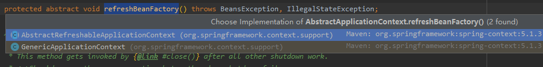

bean 标签在spring的配置文件中, 是非常重要的一个标签, 即便现在boot项目比较流行, 但是还是有必要理解bean标签的解析流程,有助于我们进行
基于注解配置, 也知道各个标签的作用,以及是怎样被spring识别的, 以及配置的时候需要注意的点.
传统的spring项目,spring内部启动的方式是基于ClassPathXmlApplicationContext启动的:
@Test
public void test1() {
//传入spring的配置文件路径
ApplicationContext classPathXmlApplicationContext = new ClassPathXmlApplicationContext("spring.xml");
System.out.println("");
}
// 调用有参构造,设置spring配置文件的位置 public ClassPathXmlApplicationContext(String configLocation) throws BeansException {
this(new String[] {configLocation}, true, null);
}
//进一步跟进
public ClassPathXmlApplicationContext( String[] configLocations, boolean refresh, @Nullable ApplicationContext parent)
throws BeansException {
// 此处parent 为null
super(parent);
//创建解析器，解析configLocations
setConfigLocations(configLocations);
// refresh = true
if (refresh) {
//刷新spring容器,bean标签的核心方法
refresh();
}
}
//进一步跟进refresh 方法
public Collection<ApplicationListener<?>> getApplicationListeners() {
return this.applicationListeners;
}
/*
* 该方法是spring容器初始化的核心方法。是spring容器初始化的核心流程，是一个典型的父类模板设计模式的运用
* 根据不同的上下文对象，会掉到不同的上下文对象子类方法中
*
* 核心上下文子类有：
* ClassPathXmlApplicationContext
* FileSystemXmlApplicationContext
* AnnotationConfigApplicationContext
* EmbeddedWebApplicationContext(springboot)
*
* 方法重要程度：
* 0：不重要，可以不看
* 1：一般重要，可看可不看
* 5：非常重要，一定要看
* */
@Override
public void refresh() throws BeansException, IllegalStateException {
synchronized (this.startupShutdownMonitor) {
//为容器初始化做准备，重要程度：0
// Prepare this context for refreshing.
prepareRefresh();
/*
重要程度：5
1、创建BeanFactory对象
* 2、xml解析
* 传统标签解析：bean、import等
* 自定义标签解析 如：<context:component-scan base-package="com.xiangxue.jack"/>
* 自定义标签解析流程：
* a、根据当前解析标签的头信息找到对应的namespaceUri
* b、加载spring所以jar中的spring.handlers文件。并建立映射关系
* c、根据namespaceUri从映射关系中找到对应的实现了NamespaceHandler接口的类
* d、调用类的init方法，init方法是注册了各种自定义标签的解析类
* e、根据namespaceUri找到对应的解析类，然后调用paser方法完成标签解析
*
* 3、把解析出来的xml标签封装成BeanDefinition对象
* */
// Tell the subclass to refresh the internal bean factory.
//此处创建bean 工厂, 解析bean 标签以及处理 component-scan 标签的核心方法
ConfigurableListableBeanFactory beanFactory = obtainFreshBeanFactory();
// Prepare the bean factory for use in this context.
prepareBeanFactory(beanFactory);
try {
// Allows post-processing of the bean factory in context subclasses.
postProcessBeanFactory(beanFactory);
// Invoke factory processors registered as beans in the context.
invokeBeanFactoryPostProcessors(beanFactory);
// Register bean processors that intercept bean creation.
registerBeanPostProcessors(beanFactory);
// Initialize message source for this context.
initMessageSource();
// Initialize event multicaster for this context.
initApplicationEventMulticaster();
// Initialize other special beans in specific context subclasses.
onRefresh();
// Check for listener beans and register them.
registerListeners();
// Instantiate all remaining (non-lazy-init) singletons.
finishBeanFactoryInitialization(beanFactory);
// Last step: publish corresponding event.
finishRefresh();
}
catch (BeansException ex) {
if (logger.isWarnEnabled()) {
logger.warn("Exception encountered during context initialization - " +
"cancelling refresh attempt: " + ex);
}
// Destroy already created singletons to avoid dangling resources.
destroyBeans();
// Reset 'active' flag.
cancelRefresh(ex);
// Propagate exception to caller.
throw ex;
}
finally {
// Reset common introspection caches in Spring's core, since we
// might not ever need metadata for singleton beans anymore...
resetCommonCaches();
}
}
}
//进一步跟进创建bean工厂的方法obtainFreshBeanFactory,研究bean 标签的解析逻辑protected ConfigurableListableBeanFactory obtainFreshBeanFactory() { //核心方法，必须读，重要程度：5
refreshBeanFactory();
return getBeanFactory();
}
//再一步跟进refreshBeanFactory 方法
跟到这里,我们发现分叉了, 有 多个实现类, 那么是跟哪一个呢?
这个是使我们看一下类的继承关系图
很明显这个时候我们再次跟进的时候需要看的跟的就是org.springframework.context.support.AbstractRefreshableApplicationContext#refreshBeanFactory ,我们再次跟踪
@Override
protected final void refreshBeanFactory() throws BeansException {
//如果BeanFactory不为空，则清除BeanFactory和里面的实例
// 由于我们的容器刚启动,所以这里自然也是false
if (hasBeanFactory()) {
destroyBeans();
closeBeanFactory();
}
try {
//创建DefaultListableBeanFactory
DefaultListableBeanFactory beanFactory = createBeanFactory();
beanFactory.setSerializationId(getId());
//设置是否可以循环依赖 allowCircularReferences
//是否允许使用相同名称重新注册不同的bean实现.
customizeBeanFactory(beanFactory);
//解析xml，并把xml中的标签封装成BeanDefinition对象
loadBeanDefinitions(beanFactory);
synchronized (this.beanFactoryMonitor) {
this.beanFactory = beanFactory;
}
}
catch (IOException ex) {
throw new ApplicationContextException("I/O error parsing bean definition source for " + getDisplayName(), ex);
}
}
// 进一步跟进spring容器加载beandefinition对象的过程@Override
protected void loadBeanDefinitions(DefaultListableBeanFactory beanFactory) throws BeansException, IOException {
// Create a new XmlBeanDefinitionReader for the given BeanFactory.
//创建xml的解析器，这里是一个委托模式
XmlBeanDefinitionReader beanDefinitionReader = new XmlBeanDefinitionReader(beanFactory);
// Configure the bean definition reader with this context's
// resource loading environment.
beanDefinitionReader.setEnvironment(this.getEnvironment());
//这里传一个this进去，因为ApplicationContext是实现了ResourceLoader接口的
beanDefinitionReader.setResourceLoader(this);
beanDefinitionReader.setEntityResolver(new ResourceEntityResolver(this));
// Allow a subclass to provide custom initialization of the reader,
// then proceed with actually loading the bean definitions.
initBeanDefinitionReader(beanDefinitionReader);
//主要看这个方法 重要程度 5
loadBeanDefinitions(beanDefinitionReader);
}
设置资源加载器设置了this 对象象,这是因为当前对象是.AbstractRefreshableApplicationContext,继承自DefaultResourceLoader,
而DefaultResourceLoader 实现了Resourloader 接口
接着上面的源码,进一步跟进核心方法loadBeanDefinitions :
//这里需要我们回忆一下我们最初的构造器,参数是设置到 configLocation 里面去了,所以这里设置核心关注点在从configLocations 中解析xml文件,解析bean标签
protected void loadBeanDefinitions(XmlBeanDefinitionReader reader) throws BeansException, IOException {
Resource[] configResources = getConfigResources();
if (configResources != null) {
reader.loadBeanDefinitions(configResources);
}
//获取需要加载的xml配置文件
String[] configLocations = getConfigLocations();
if (configLocations != null) {
reader.loadBeanDefinitions(configLocations);
}
}
//进一步跟进loadBeanDefinitions(String args) 这个方法@Override
public int loadBeanDefinitions(String... locations) throws BeanDefinitionStoreException { Assert.notNull(locations, "Location array must not be null");
int count = 0;
//配置文件有多个，加载多个配置文件
for (String location : locations) {
//这里的数量是beandefination的数量
count += loadBeanDefinitions(location);
}
return count;
}
//再进一步跟进
@Override
public int loadBeanDefinitions(String location) throws BeanDefinitionStoreException {
return loadBeanDefinitions(location, null);
}
//在进一步跟进public int loadBeanDefinitions(String location, @Nullable Set<Resource> actualResources) throws BeanDefinitionStoreException {
ResourceLoader resourceLoader = getResourceLoader();
if (resourceLoader == null) {
throw new BeanDefinitionStoreException(
"Cannot load bean definitions from location [" + location + "]: no ResourceLoader available");
}
if (resourceLoader instanceof ResourcePatternResolver) {
// Resource pattern matching available.
try {
//把字符串类型的xml文件路径，形如：classpath*:user/**/*-context.xml,转换成Resource对象类型，其实就是用流
//的方式加载配置文件，然后封装成Resource对象，不重要，可以不看
Resource[] resources = ((ResourcePatternResolver) resourceLoader).getResources(location);
//主要看这个方法 ** 重要程度 5
int count = loadBeanDefinitions(resources);
if (actualResources != null) {
Collections.addAll(actualResources, resources);
}
if (logger.isTraceEnabled()) {
logger.trace("Loaded " + count + " bean definitions from location pattern [" + location + "]");
}
return count;
}
catch (IOException ex) {
throw new BeanDefinitionStoreException(
"Could not resolve bean definition resource pattern [" + location + "]", ex);
}
}
else {
// Can only load single resources by absolute URL.
Resource resource = resourceLoader.getResource(location);
int count = loadBeanDefinitions(resource);
if (actualResources != null) {
actualResources.add(resource);
}
if (logger.isTraceEnabled()) {
logger.trace("Loaded " + count + " bean definitions from location [" + location + "]");
}
return count;
}
}
// 再进一步跟踪loadBeanDefinitions 方法public int loadBeanDefinitions(String location, @Nullable Set<Resource> actualResources) throws BeanDefinitionStoreException {
ResourceLoader resourceLoader = getResourceLoader();
if (resourceLoader == null) {
throw new BeanDefinitionStoreException(
"Cannot load bean definitions from location [" + location + "]: no ResourceLoader available");
}
if (resourceLoader instanceof ResourcePatternResolver) {
// Resource pattern matching available.
try {
//把字符串类型的xml文件路径，形如：classpath*:user/**/*-context.xml,转换成Resource对象类型，其实就是用流
//的方式加载配置文件，然后封装成Resource对象，不重要，可以不看
Resource[] resources = ((ResourcePatternResolver) resourceLoader).getResources(location);
//主要看这个方法 ** 重要程度 5
int count = loadBeanDefinitions(resources);
if (actualResources != null) {
Collections.addAll(actualResources, resources);
}
if (logger.isTraceEnabled()) {
logger.trace("Loaded " + count + " bean definitions from location pattern [" + location + "]");
}
return count;
}
catch (IOException ex) {
throw new BeanDefinitionStoreException(
"Could not resolve bean definition resource pattern [" + location + "]", ex);
}
}
else {
// Can only load single resources by absolute URL.
Resource resource = resourceLoader.getResource(location);
int count = loadBeanDefinitions(resource);
if (actualResources != null) {
actualResources.add(resource);
}
if (logger.isTraceEnabled()) {
logger.trace("Loaded " + count + " bean definitions from location [" + location + "]");
}
return count;
}
}
// 进一步跟踪loadBeanDefinitions(resources) 方法由于代码很深, 跟着跟着很有可能就跟丢了,这个时候debug 一下:
那么我们继续
// 进一步跟踪loadBeanDefinitions(resources) 方法
@Override
public int loadBeanDefinitions(Resource... resources) throws BeanDefinitionStoreException {
Assert.notNull(resources, "Resource array must not be null");
int count = 0;
for (Resource resource : resources) {
//模板设计模式，调用到子类中的方法
count += loadBeanDefinitions(resource);
}
return count;
}
// 再 进一步跟踪
@Override
public int loadBeanDefinitions(Resource resource) throws BeanDefinitionStoreException { //EncodedResource带编码的对Resource对象的封装
return loadBeanDefinitions(new EncodedResource(resource));
}
public int loadBeanDefinitions(EncodedResource encodedResource) throws BeanDefinitionStoreException {
Assert.notNull(encodedResource, "EncodedResource must not be null");
if (logger.isTraceEnabled()) {
logger.trace("Loading XML bean definitions from " + encodedResource);
}
Set<EncodedResource> currentResources = this.resourcesCurrentlyBeingLoaded.get();
if (currentResources == null) {
currentResources = new HashSet<>(4);
this.resourcesCurrentlyBeingLoaded.set(currentResources);
}
if (!currentResources.add(encodedResource)) {
throw new BeanDefinitionStoreException(
"Detected cyclic loading of " + encodedResource + " - check your import definitions!");
}
try {
//获取Resource对象中的xml文件流对象
InputStream inputStream = encodedResource.getResource().getInputStream();
try {
//InputSource是jdk中的sax xml文件解析对象
InputSource inputSource = new InputSource(inputStream);
if (encodedResource.getEncoding() != null) {
inputSource.setEncoding(encodedResource.getEncoding());
}
//主要看这个方法 ** 重要程度 5
// 这里才是真正开始解析,封装beanDifination对象
return doLoadBeanDefinitions(inputSource, encodedResource.getResource());
}
finally {
inputStream.close();
}
}
catch (IOException ex) {
throw new BeanDefinitionStoreException(
"IOException parsing XML document from " + encodedResource.getResource(), ex);
}
finally {
currentResources.remove(encodedResource);
if (currentResources.isEmpty()) {
this.resourcesCurrentlyBeingLoaded.remove();
}
}
}
//进一步跟踪如下
// 加载xml,解析document,将其中的元素封装为beandefinition 并注册
protected int doLoadBeanDefinitions(InputSource inputSource, Resource resource) throws BeanDefinitionStoreException {
try {
//把inputSource 封装成Document文件对象，这是jdk的API
Document doc = doLoadDocument(inputSource, resource);
//主要看这个方法，根据解析出来的document对象，拿到里面的标签元素封装成BeanDefinition
int count = registerBeanDefinitions(doc, resource);
if (logger.isDebugEnabled()) {
logger.debug("Loaded " + count + " bean definitions from " + resource);
}
return count;
}
catch (BeanDefinitionStoreException ex) {
throw ex;
}
catch (SAXParseException ex) {
throw new XmlBeanDefinitionStoreException(resource.getDescription(),
"Line " + ex.getLineNumber() + " in XML document from " + resource + " is invalid", ex);
}
catch (SAXException ex) {
throw new XmlBeanDefinitionStoreException(resource.getDescription(),
"XML document from " + resource + " is invalid", ex);
}
catch (ParserConfigurationException ex) {
throw new BeanDefinitionStoreException(resource.getDescription(),
"Parser configuration exception parsing XML from " + resource, ex);
}
catch (IOException ex) {
throw new BeanDefinitionStoreException(resource.getDescription(),
"IOException parsing XML document from " + resource, ex);
}
catch (Throwable ex) {
throw new BeanDefinitionStoreException(resource.getDescription(),
"Unexpected exception parsing XML document from " + resource, ex);
}
}
//进一步跟踪源代码
// 创建reader 读取document,并将其封装为 beandefination,以及并注册
public int registerBeanDefinitions(Document doc, Resource resource) throws BeanDefinitionStoreException { //又来一记委托模式，BeanDefinitionDocumentReader委托这个类进行document的解析
BeanDefinitionDocumentReader documentReader = createBeanDefinitionDocumentReader();
int countBefore = getRegistry().getBeanDefinitionCount();
//主要看这个方法，createReaderContext(resource) XmlReaderContext上下文，封装了XmlBeanDefinitionReader对象
documentReader.registerBeanDefinitions(doc, createReaderContext(resource));
return getRegistry().getBeanDefinitionCount() - countBefore;
}
其中部分调用方法简单做一下分析
//public XmlReaderContext createReaderContext(Resource resource) {
// return new XmlReaderContext(resource, this.problemReporter, this.eventListener,
//获取命名空间解析器,后续用来判断是否默认的名称空间, 针对不同的名称空间进行处理
// this.sourceExtractor, this, getNamespaceHandlerResolver());
//}
// 回到主流程进行进一步分析,以及跟踪@Override
public void registerBeanDefinitions(Document doc, XmlReaderContext readerContext) {
this.readerContext = readerContext;
//主要看这个方法，把root节点传进去
doRegisterBeanDefinitions(doc.getDocumentElement());
}
// 此时传入的元素为根元素
protected void doRegisterBeanDefinitions(Element root) { // Any nested <beans> elements will cause recursion in this method. In
// order to propagate and preserve <beans> default-* attributes correctly,
// keep track of the current (parent) delegate, which may be null. Create
// the new (child) delegate with a reference to the parent for fallback purposes,
// then ultimately reset this.delegate back to its original (parent) reference.
// this behavior emulates a stack of delegates without actually necessitating one.
//创建BeanDefinitionParser 的委托类,并进行默认属性的的设置
// 如果bean的属性没有设置,则使用默认值得默认属性
BeanDefinitionParserDelegate parent = this.delegate;
this.delegate = createDelegate(getReaderContext(), root, parent);
//判断是否默认的命名空间的依据是否是beans开始的,开始的则是默认的命名空间 否则就不是
if (this.delegate.isDefaultNamespace(root)) {
String profileSpec = root.getAttribute(PROFILE_ATTRIBUTE);
if (StringUtils.hasText(profileSpec)) {
String[] specifiedProfiles = StringUtils.tokenizeToStringArray(
profileSpec, BeanDefinitionParserDelegate.MULTI_VALUE_ATTRIBUTE_DELIMITERS);
// We cannot use Profiles.of(...) since profile expressions are not supported
// in XML config. See SPR-12458 for details.
if (!getReaderContext().getEnvironment().acceptsProfiles(specifiedProfiles)) {
if (logger.isDebugEnabled()) {
logger.debug("Skipped XML bean definition file due to specified profiles [" + profileSpec +
"] not matching: " + getReaderContext().getResource());
}
return;
}
}
}
// 前置处理
preProcessXml(root);
//主要看这个方法，标签具体解析过程
parseBeanDefinitions(root, this.delegate);
// 后置处理 模板设计模式 , springmvc 中的interceptor
postProcessXml(root);
this.delegate = parent;
}
在这里我们需要留意一下创建解析方法,其中有做默认属性的处理
//开始解析元素, 根据命名空间是否默认命名空间,解析方式不一样
// 其中涉及到bean 解析的其实是两种都有设计到, bean 标签没带前缀,为默认命名空
// 开启注解的<context:component-scan= "basepacakge "> 非默认的命名空间
// 我们的bean 标签不属于自定义标签
protected void parseBeanDefinitions(Element root, BeanDefinitionParserDelegate delegate) {
if (delegate.isDefaultNamespace(root)) {
NodeList nl = root.getChildNodes();
for (int i = 0; i < nl.getLength(); i++) {
Node node = nl.item(i);
if (node instanceof Element) {
Element ele = (Element) node;
if (delegate.isDefaultNamespace(ele)) {
//默认标签解析
parseDefaultElement(ele, delegate);
}
else {
//自定义标签解析
delegate.parseCustomElement(ele);
}
}
}
}
else {
delegate.parseCustomElement(root);
}
}
//这里我们先跟踪bean 基于xml的bean 标签解析
// bean 标签属于默认标签
private void parseDefaultElement(Element ele, BeanDefinitionParserDelegate delegate) {
//import标签解析 重要程度 1 ，可看可不看
if (delegate.nodeNameEquals(ele, IMPORT_ELEMENT)) {
importBeanDefinitionResource(ele);
}
//alias标签解析 别名标签 重要程度 1 ，可看可不看
else if (delegate.nodeNameEquals(ele, ALIAS_ELEMENT)) {
processAliasRegistration(ele);
}
//bean标签，重要程度 5，必须看
// 如果是bean 标签,则进步解析为beanDefinition 对象
else if (delegate.nodeNameEquals(ele, BEAN_ELEMENT)) {
processBeanDefinition(ele, delegate);
}
else if (delegate.nodeNameEquals(ele, NESTED_BEANS_ELEMENT)) {
// recurse
doRegisterBeanDefinitions(ele);
}
}
//解析bean 标签并封装成beandefinitionHolder 对象protected void processBeanDefinition(Element ele, BeanDefinitionParserDelegate delegate) {
//重点看这个方法，重要程度 5 ，解析document，封装成BeanDefinition
BeanDefinitionHolder bdHolder = delegate.parseBeanDefinitionElement(ele);
if (bdHolder != null) {
//该方法功能不重要，设计模式重点看一下，装饰者设计模式，加上SPI设计思想
bdHolder = delegate.decorateBeanDefinitionIfRequired(ele, bdHolder);
try {
//完成document到BeanDefinition对象转换后，对BeanDefinition对象进行缓存注册
// Register the final decorated instance.
BeanDefinitionReaderUtils.registerBeanDefinition(bdHolder, getReaderContext().getRegistry());
}
catch (BeanDefinitionStoreException ex) {
getReaderContext().error("Failed to register bean definition with name '" +
bdHolder.getBeanName() + "'", ele, ex);
}
// Send registration event.
getReaderContext().fireComponentRegistered(new BeanComponentDefinition(bdHolder));
}
}
//进一步跟踪@Nullable
public BeanDefinitionHolder parseBeanDefinitionElement(Element ele) {
return parseBeanDefinitionElement(ele, null);
}
//进一步跟踪@Nullable
public BeanDefinitionHolder parseBeanDefinitionElement(Element ele, @Nullable BeanDefinition containingBean) {
String id = ele.getAttribute(ID_ATTRIBUTE);
String nameAttr = ele.getAttribute(NAME_ATTRIBUTE);
List<String> aliases = new ArrayList<>();
if (StringUtils.hasLength(nameAttr)) {
String[] nameArr = StringUtils.tokenizeToStringArray(nameAttr, MULTI_VALUE_ATTRIBUTE_DELIMITERS);
aliases.addAll(Arrays.asList(nameArr));
}
String beanName = id;
// 当bean 为空, 并且 别名不为空的情况下, 取第一个别名作为bean的别名
if (!StringUtils.hasText(beanName) && !aliases.isEmpty()) {
beanName = aliases.remove(0);
if (logger.isTraceEnabled()) {
logger.trace("No XML 'id' specified - using '" + beanName +
"' as bean name and " + aliases + " as aliases");
}
}
//检查beanName是否重复
if (containingBean == null) {
checkNameUniqueness(beanName, aliases, ele);
}
// 核心方法.解析元素封装为beandefinition对象
AbstractBeanDefinition beanDefinition = parseBeanDefinitionElement(ele, beanName, containingBean);
if (beanDefinition != null) {
if (!StringUtils.hasText(beanName)) {
try {
if (containingBean != null) {
beanName = BeanDefinitionReaderUtils.generateBeanName(
beanDefinition, this.readerContext.getRegistry(), true);
}
else {
// 如果即没有name 属性也没有id 属性,此时bean没有名称
// 这里生成beanName
// xml 方式的beanName 为 全限定命名#数字 如果 com.test.Student#0
beanName = this.readerContext.generateBeanName(beanDefinition);
// Register an alias for the plain bean class name, if still possible,
// if the generator returned the class name plus a suffix.
// This is expected for Spring 1.2/2.0 backwards compatibility.
String beanClassName = beanDefinition.getBeanClassName();
if (beanClassName != null &&
beanName.startsWith(beanClassName) && beanName.length() > beanClassName.length() &&
!this.readerContext.getRegistry().isBeanNameInUse(beanClassName)) {
aliases.add(beanClassName);
}
}
if (logger.isTraceEnabled()) {
logger.trace("Neither XML 'id' nor 'name' specified - " +
"using generated bean name [" + beanName + "]");
}
}
catch (Exception ex) {
error(ex.getMessage(), ele);
return null;
}
}
String[] aliasesArray = StringUtils.toStringArray(aliases);
return new BeanDefinitionHolder(beanDefinition, beanName, aliasesArray);
}
return null;
}
//进一步跟踪封装成为beanDefinition对象的全过程public AbstractBeanDefinition parseBeanDefinitionElement(
Element ele, String beanName, @Nullable BeanDefinition containingBean) {
this.parseState.push(new BeanEntry(beanName));
String className = null;
// 获取class 属性
if (ele.hasAttribute(CLASS_ATTRIBUTE)) {
className = ele.getAttribute(CLASS_ATTRIBUTE).trim();
}
// 获取parent 属性
String parent = null;
if (ele.hasAttribute(PARENT_ATTRIBUTE)) {
parent = ele.getAttribute(PARENT_ATTRIBUTE);
}
try {
//创建GenericBeanDefinition对象
// 这里的beandefinition 对象是GenericBeanDefinition
AbstractBeanDefinition bd = createBeanDefinition(className, parent); //解析bean标签的属性，并把解析出来的属性设置到BeanDefinition对象中
parseBeanDefinitionAttributes(ele, beanName, containingBean, bd);
bd.setDescription(DomUtils.getChildElementValueByTagName(ele, DESCRIPTION_ELEMENT));
//解析bean中的meta标签
parseMetaElements(ele, bd);
//解析bean中的lookup-method标签 重要程度：2，可看可不看
parseLookupOverrideSubElements(ele, bd.getMethodOverrides());
//解析bean中的replaced-method标签 重要程度：2，可看可不看
parseReplacedMethodSubElements(ele, bd.getMethodOverrides());
//解析bean中的constructor-arg标签 重要程度：2，可看可不看
parseConstructorArgElements(ele, bd);
//解析bean中的property标签 重要程度：2，可看可不看
parsePropertyElements(ele, bd);
//可以不看，用不到
parseQualifierElements(ele, bd);
bd.setResource(this.readerContext.getResource());
bd.setSource(extractSource(ele));
return bd;
}
catch (ClassNotFoundException ex) {
error("Bean class [" + className + "] not found", ele, ex);
}
catch (NoClassDefFoundError err) {
error("Class that bean class [" + className + "] depends on not found", ele, err);
}
catch (Throwable ex) {
error("Unexpected failure during bean definition parsing", ele, ex);
}
finally {
this.parseState.pop();
}
return null;
}
// 属性解析的逻辑public AbstractBeanDefinition parseBeanDefinitionAttributes(Element ele, String beanName,
@Nullable BeanDefinition containingBean, AbstractBeanDefinition bd) {
if (ele.hasAttribute(SINGLETON_ATTRIBUTE)) {
error("Old 1.x 'singleton' attribute in use - upgrade to 'scope' declaration", ele);
}
// 解析scope 属性
else if (ele.hasAttribute(SCOPE_ATTRIBUTE)) {
bd.setScope(ele.getAttribute(SCOPE_ATTRIBUTE));
}
else if (containingBean != null) {
// Take default from containing bean in case of an inner bean definition.
bd.setScope(containingBean.getScope());
}
// 解析abstract 属性
if (ele.hasAttribute(ABSTRACT_ATTRIBUTE)) {
bd.setAbstract(TRUE_VALUE.equals(ele.getAttribute(ABSTRACT_ATTRIBUTE)));
}
// 从解析委托类中获取默认属性值lazy_init
String lazyInit = ele.getAttribute(LAZY_INIT_ATTRIBUTE);
if (DEFAULT_VALUE.equals(lazyInit)) {
lazyInit = this.defaults.getLazyInit();
}
bd.setLazyInit(TRUE_VALUE.equals(lazyInit));
String autowire = ele.getAttribute(AUTOWIRE_ATTRIBUTE);
bd.setAutowireMode(getAutowireMode(autowire));
// depends-on 属性
if (ele.hasAttribute(DEPENDS_ON_ATTRIBUTE)) {
String dependsOn = ele.getAttribute(DEPENDS_ON_ATTRIBUTE);
bd.setDependsOn(StringUtils.tokenizeToStringArray(dependsOn, MULTI_VALUE_ATTRIBUTE_DELIMITERS));
}
String autowireCandidate = ele.getAttribute(AUTOWIRE_CANDIDATE_ATTRIBUTE);
if ("".equals(autowireCandidate) || DEFAULT_VALUE.equals(autowireCandidate)) {
String candidatePattern = this.defaults.getAutowireCandidates();
if (candidatePattern != null) {
String[] patterns = StringUtils.commaDelimitedListToStringArray(candidatePattern);
bd.setAutowireCandidate(PatternMatchUtils.simpleMatch(patterns, beanName));
}
}
else {
bd.setAutowireCandidate(TRUE_VALUE.equals(autowireCandidate));
}
//这个primary 属性
if (ele.hasAttribute(PRIMARY_ATTRIBUTE)) {
bd.setPrimary(TRUE_VALUE.equals(ele.getAttribute(PRIMARY_ATTRIBUTE)));
}
// init-method 属性
if (ele.hasAttribute(INIT_METHOD_ATTRIBUTE)) {
String initMethodName = ele.getAttribute(INIT_METHOD_ATTRIBUTE);
bd.setInitMethodName(initMethodName);
}
else if (this.defaults.getInitMethod() != null) {
bd.setInitMethodName(this.defaults.getInitMethod());
bd.setEnforceInitMethod(false);
}
//destory-method
if (ele.hasAttribute(DESTROY_METHOD_ATTRIBUTE)) {
String destroyMethodName = ele.getAttribute(DESTROY_METHOD_ATTRIBUTE);
bd.setDestroyMethodName(destroyMethodName);
}
else if (this.defaults.getDestroyMethod() != null) {
bd.setDestroyMethodName(this.defaults.getDestroyMethod());
bd.setEnforceDestroyMethod(false);
}
//factory-method
if (ele.hasAttribute(FACTORY_METHOD_ATTRIBUTE)) {
bd.setFactoryMethodName(ele.getAttribute(FACTORY_METHOD_ATTRIBUTE));
}
//factory-bean 属性
if (ele.hasAttribute(FACTORY_BEAN_ATTRIBUTE)) {
bd.setFactoryBeanName(ele.getAttribute(FACTORY_BEAN_ATTRIBUTE));
}
return bd;
}
//到此,spring 解析bean 标签基本完后,我们在回过去看bean标签解析完成后,做了什么处理
//beandefinition 解析完成后,注册到bean 注册中心中去,后续实例化的时候再去取用public static void registerBeanDefinition(
BeanDefinitionHolder definitionHolder, BeanDefinitionRegistry registry)
throws BeanDefinitionStoreException {
// Register bean definition under primary name.
String beanName = definitionHolder.getBeanName();
//完成BeanDefinition的注册，重点看，重要程度 5
registry.registerBeanDefinition(beanName, definitionHolder.getBeanDefinition());
//建立别名和 id的映射，这样就可以根据别名获取到id
// Register aliases for bean name, if any.
String[] aliases = definitionHolder.getAliases();
if (aliases != null) {
for (String alias : aliases) {
registry.registerAlias(beanName, alias);
}
}
}
// 注册beandefinitionholder 到bean 注册中心中public static void registerBeanDefinition(
BeanDefinitionHolder definitionHolder, BeanDefinitionRegistry registry)
throws BeanDefinitionStoreException {
// Register bean definition under primary name.
String beanName = definitionHolder.getBeanName();
//完成BeanDefinition的注册，重点看，重要程度 5
registry.registerBeanDefinition(beanName, definitionHolder.getBeanDefinition());
//建立别名和 id的映射，这样就可以根据别名获取到id
// Register aliases for bean name, if any.
String[] aliases = definitionHolder.getAliases();
if (aliases != null) {
for (String alias : aliases) {
registry.registerAlias(beanName, alias);
}
}
}
至此,bean 标签的解析流程基本结束, 如果用流程图表示整个过程的话,整个过程的整体流程如图所示:
后续会继续完善开启注解扫描部分的讲解.即<context:component-scan="basepackage"> 标签的解析流程.